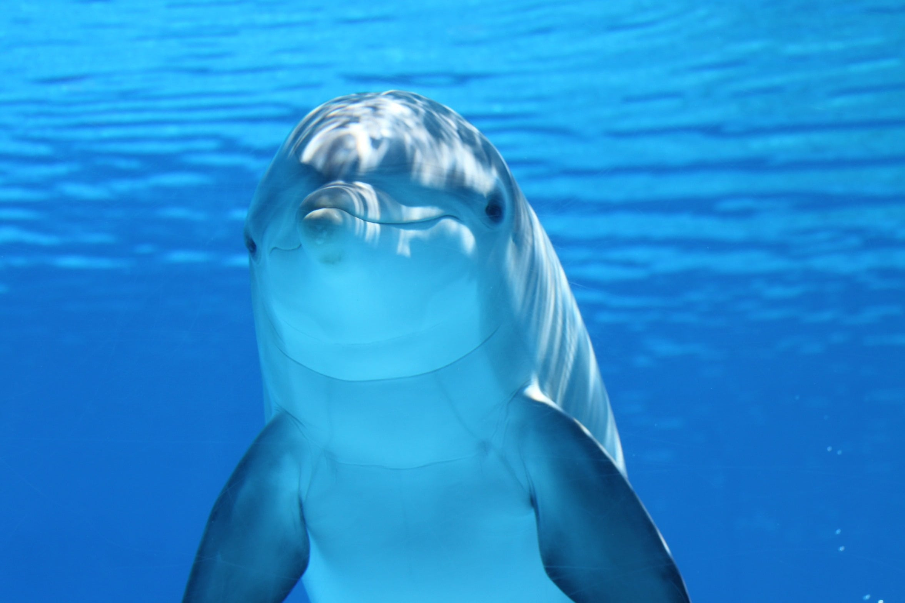

Az óceánokban rengeteg különleges élőlény él, és a legmélyebb pontjukon még az Everestnél is mélyebbre lehetne süllyedni.

Az óceánokban rengeteg különleges élőlény él, és a legmélyebb pontjukon még az Everestnél is mélyebbre lehetne süllyedni.
Tudj meg többet| Állatfajta | Környezet | Növények | Jelenségek |
|---|---|---|---|
| Emlősök | Óceán | Alga | Hullámok |
| Rákok | Tenger | Hínár | Árapály |
| Halak | Víz | Tengeri fű | Áramlatok |